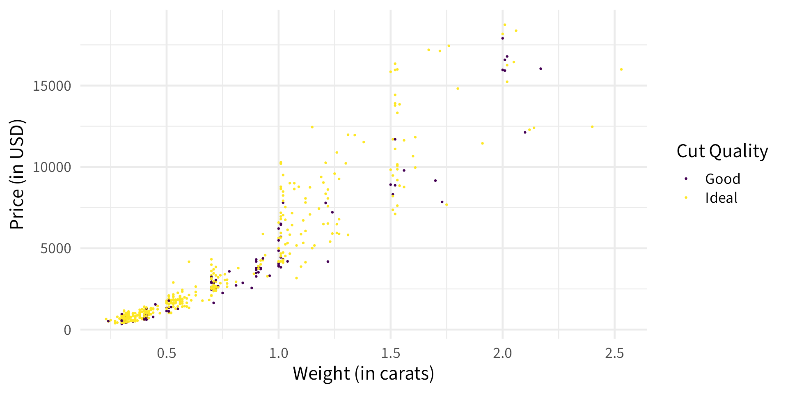

05:00
Welcome to Stat120!
Prof Amanda Luby | Fall 2025
Plan for today
- Intros
- Syllabus/About the Course
- Intro to Data
About me
- Ellis (almost 1.5!)
- Second year at Carleton
- Taught at Swarthmore for 5 years before moving to MN
- PhD in Statistics & Data Science from Carnegie Mellon University
- Grew up in Minnesota, went to St Ben’s as an undergrad

My crochet journey this summer
- Decided I wanted to make a basket
- Skipped “practice these stitches” and just went for it
- Didn’t understand the pattern, watched a couple of youtube videos from random creators and went for it
- Kept going even when I was very clearly doing something wrong
My crochet journey this summer
- Asked an expert (my sister) for advice
- Did “practice problems” using easier material (yarn) and bigger hook
- Found a reliable internet source for videos and tutorials
- Started being way more careful about checking my work and redoing things if I wasn’t sure
Intros
- Name
- What makes you nervous about this class or term?
- Something about yourself you are proud of
Syllabus
Statistical Literacy is a key skill for many different courses and majors, and becoming necessary to be a responsible citizen in “the real world”. In this course, we’ll lay the foundations for statistical literacy and learn basic data analysis skills. Upon completion of the course, I expect you to be able to:
Work with and describe various types of data
Understand the role of variation and randomness and the principles of statistical inference
Choose the appropriate statistical analysis for a given task and recognize when certain statistical analyses are not appropriate
Analyze data and apply statistical methods using R and interpret results
Critically examine analyses of data and interpretations of results from statistical methods
There are no prerequisites for this course, and you do need to have any background in statistics, mathematics, or computer science to do well. If you’ve already taken Math 211, Psych 200, Psych 201, SOAN 239, or Stat 250, a different statistics class may be more appropriate for you. Please see me if this is the case.
General Flow of the Course
Data
- Collecting Data
- Exploratory Data Analysis
- Uni- and Multi-variate
Introduction to Statistical Inference
- Sampling Uncertainty
- Confidence Intervals
- Hypothesis Tests
Formal Inference
- Specific settings
- Working on projects
Textbook:
- Statistics: Unlocking the Power of Data by Lock, Lock, Lock, Lock, and Lock. (3rd Edition)
- On reserve at the library if you are not able to purchase it.
- Homework will be assigned from the chapter, so please make sure you’re working out of the right edition
- Some days I’ll ask you to skim chapters before class; other times I’ll ask you to read them after class.
- Stat 120 Lab Manual by Chihara & Loy
- Freely available online
- Reference for using R
What do we do in class?
- Daily attendance is expected
- Please come to class prepared. Check moodle for any before class tasks and complete the daily check-in on gradescope
- Please bring a laptop
- For each class, I’ll post a handout and slides. During class, you should fill in the handout. These become your reference materials for the class. I’ll bring blank printed copies for the first few weeks.
Assignments
- Homework will be assigned once per week, due on gradescope by midnight on Wednesday (Friday in week 4, 7, 9)
- No-questions-asked 12 hour grace period if you need it
- (grace period = no penalty, but help is generally not available anymore)
- Alternative due dates must be arranged in advance
- Assignment submissions should be typeset using rmarkdown OR neatly written and scanned and submitted as a PDF file.
- You’re responsible for submitting readable work and properly marking your questions on gradescope
Regrade request policy
- Can be submitted on gradescope within 2 weekdays after graded homework has been returned
- Use for administrative errors or obvious grading mistakes
- “The grader said I didn’t answer this but it’s at the bottom of the page”
- “It said the answer is 4.39 and I put 4.387”
- Do not use for anything that applied to the entire class
- “I think this mistake should only be worth 1 point instead of 2”
- “I didn’t realize we had to do X”
- If you submit two or more inappropriate regrade requests, I won’t consider any more from you during the term
- Come talk to me with any questions!
Exams
- While I believe most of your learning in this course will happen through working on homework and your project, part of being literate in statistics is being able to recall basic concepts and interpret analyses “on the fly”, without access to other resources
- There will be three in-class exams, tentatively scheduled for Fridays of Week 3, 6, and 9
- If I need to reschedule, I’ll give you at least two weeks notice.
- Any conflicts must be communicated to me in writing at least two weeks in advance to be able to schedule a make-up time
- If an emergency arises and you’re unable to take the exam, please contact me and your class deans as soon as possible.
Final Project
- Group data analysis project
- Poster session on the last day of class
- Final paper due during finals period
- Short proposal is due before the midterm break
How will my final grade be calculated?
- 15% homework
- 5% daily check-ins (lowest 3 will be dropped)
- 5% attendance and participation in group work
- 16.33% each exam (50% total)
- 15% final paper
- 10% final project
- Letter grades will be assigned based on the usual grading scale (A = 93%+, A- = 90-92.9%, B+ = 88-89.9%, B = 83-87.9, etc.)
Advice from past intro stat students:
Don’t be afraid to ask questions. Even if you think they’re really stupid, asking them could help you understand so many concepts.
Even if homework is due weekly, try to do it throughout the week so you can check your understanding between class periods. Ask Amanda for help - especially in R! It’s usually a quick fix and much easier than breaking your brain over a small error.
Do the work! The class really is not too difficult if you do what Amanda assigns/recommends. Readings, daily preps, HWs were all very helpful for learning.
To keep up with the work and really nail down the concepts because everything connects and if you don’t understand something in the moment it will make things harder in the future
Don’t be afraid to ask questions, in and out of class, and don’t try to figure everything out on your own. Talking through problems with friends, people from stats lab, or Amanda helps a lot!
Do NOT procrastinate on the homework because a lot of times I had trouble knitting and that is not ideal if you wait until the last minute to turn in the homework.
START. THE HOMEWORK. EARLY. You may think “oh, it’s a 100 level course, the homework can’t take THAT long” but it can. It CAN take that long. And it will.
Ask questions! Prof. Luby is extremely helpful and approachable
i would say to not be afraid of using R. it really isnt as bad as it looks and can be pretty fun to use if you just learn the fundamentals of it
Getting Help
This course was not designed for you to do on your own in your dorm room every week, and I expect you to need some help on most assignments.
Office Hours are held in CMC 307. You can come and go as you please! These are open to all students in the class so you may need to wait a little while to have your specific question answered. These are best for homework questions and conceptual questions about material
Individual Appointments will be available throughout the week. Appointment slots open 5 days in advance and close 2 hours in advance. Please use these for in-depth conversations about grade concerns, project consultations, or if you need extra help on a specific concept. You’re welcome to come as a group, but please note that 15 minutes goes by fast!
Stat Lab is staffed by friendly and knowledgeable student assistants who can help you with R questions that arise on your homework or projects. Please come prepared with your attempt, your class notes, and your lab manual to make the most of your time.
Slack is an asychronous communication platform where you can also ask homework questions anytime! I’ll respond to messages at least twice per weekday. If you see someone ask a question that you know the answer to, please respond!
Office hours (tentative)
| Day | Time | Type | Location |
|---|---|---|---|
| Monday | 12:30-1:30 | Drop-in | CMC 307 |
| Tuesday | 2-3 | Drop-in | CMC 307 |
| Wednesday | 3-41 | Drop-in | CMC 307 |
| Friday | 10-112 | Drop-in | CMC 307 |
Communication
- Moodle: assignments, slides, and grades
- Slack: homework questions, announcements, discussion
- Email: personal matters, time-sensitive announcements
Slack is the fastest way to reach me. I typically will respond to messages 3x per weekday. I try to respond to emails within 48 hours. I’m online sporadically on evenings and weekends to devote time to family and rest – I hope you also use this time to reset and recharge!
The “Genius Myth”
It’s sometimes easy to buy into the “genius myth” when it comes to math/stat courses: that you need to be a “math person” and have some innate mathematical ability in order to do well or become a statistics major. This could not be further from the truth! The best statisticians don’t necessarily have the “best” math or programming background, but are people that are able to formulate interesting questions and use math and programming to rigorously answer those questions. Many of the best statisticians I know became statisticians because they were initially interested in something else (biology, public health, psychology, neuroscience, physics, etc.) and realized that being able to answer important questions with data was not only valuable but fun and interesting. Being able to perform interesting statistical analyses is a skill that is learned, not an innate ability, and working hard at developing that skill is the point of this course.
Academic Integrity
You are expected to follow Carleton’s policies regarding academic integrity. I encourage you to discuss the homework problems with others and use the resources available to you to try to figure out tough problems. You should code and write up your solutions on your own. Exams must be done by yourself without communicating with others; all work must be your own. The use of textbook solution manuals (physical or online), course materials from other students, or materials from previous versions of this course are not allowed. Copying, paraphrasing, summarizing, or submitting work generated by anyone but yourself without proper attribution is considered academic dishonesty (this includes output from LLMs).
Please ask if you are unsure of whether or not your actions are complying with the assignment/exam/project instructions. Always default to acknowledging any help received. Cases of suspected academic dishonesty are handled by the Provost’s Office and I am obligated to report any suspected violations of this policy.
More on “AI”
Large-language models (e.g. ChatGPT, Gemini, etc.) should only be used for help interpreting R’s error messages or suggestions for your own code once you have already attempted the problem. You should not copy and paste course material into or out of an AI text generator.
I also have a few rules in place to protect my intellectual property. You may not record my lectures using tools such as Otter.ai or upload any video or audio recordings to generate transcripts or study notes. You may not upload my course materials (slides, assignment prompts, note sets, etc.) into AI tools or homework help sites (such as chegg).
“AI” tools are new for all of us and it’s OK to have questions about what is and isn’t appropriate!
Diversity & Inclusion
We all come to class with different backgrounds and experiences, and this diversity makes our class environment richer. We value diversity and inclusion, and are committed to a climate of mutual respect and full participation in and out of the classroom. This class strives to be a learning environment that is usable, equitable, inclusive and welcoming, regardless of race, ethnicity, religion, gender and gender identities, sexual orientation, ability, socioeconomic background, and nationality. If you anticipate or experience any barriers to learning, please discuss your concerns with me.
Accomodations
Carleton College is committed to providing equitable access to learning opportunities for all students. The Office of Accessibility Resources (Henry House, 107 Union Street) is the campus office that collaborates with students who have disabilities to provide and/or arrange reasonable accommodations. If you have, or think you may have, a disability, please contact OAR@carleton.edu to arrange a confidential discussion regarding equitable access and reasonable accommodations. You are also welcome to contact me privately to discuss your academic needs. However, all disability-related accommodations must be arranged, in advance, through OAR.
Title IX
Please be aware that all faculty are “responsible employees”, which means that if you tell me about a situation involving sexual harassment, sexual assault, dating violence, domestic violence, or stalking, I must share that information with the Title IX Coordinator. Although I have to make this notification, you will control how your case will be handled, including whether or not you wish to meet with the Title IX coordinator or pursue a formal complaint.
Take care of yourself
Do your best to maintain a healthy lifestyle this semester by wearing a mask if you don’t feel well, eating a vegetable every day, exercising, avoiding excessive drug and alcohol use, getting enough sleep, and taking some time to relax. Your mental health is more important than your grade in this course. There are many helpful resources available on campus and an important part of the college experience is learning how to ask for help. If you are experiencing mental health symptoms as a result of coursework, please speak with me so we can address the problem together.
Intro to Data
The palmerpenguins data

Data were collected and made available by Dr. Kristen Gorman and the Palmer Station, Antarctica LTER, a member of the Long Term Ecological Research Network.
Data as a “spreadsheet”
| species | island | bill_length_mm | bill_depth_mm | flipper_length_mm | body_mass_g | sex | year |
|---|---|---|---|---|---|---|---|
| Adelie | Torgersen | 39.1 | 18.7 | 181 | 3750 | male | 2007 |
| Adelie | Torgersen | 39.5 | 17.4 | 186 | 3800 | female | 2007 |
| Adelie | Torgersen | 40.3 | 18.0 | 195 | 3250 | female | 2007 |
| Adelie | Torgersen | NA | NA | NA | NA | NA | 2007 |
| Adelie | Torgersen | 36.7 | 19.3 | 193 | 3450 | female | 2007 |
| Adelie | Torgersen | 39.3 | 20.6 | 190 | 3650 | male | 2007 |
Definitions
Cases
Also called “units” or “observations”. Generally correspond to rows in a dataset. What does each “data point” represent
Variables
Characteristics that are recorded for each case. Generally correspond to columns in the dataset


Types of Variables
flowchart LR A(Categorical) --> B(Ordered/Ordinal) A --> C(Binary) A --> D(Categorical)
flowchart LR A(Quantitative) --> B(Discrete) A --> C(Continuous)
Explanatory vs Response Variable
An explanatory variable is the variable you believe causes, predicts, or influences another variable, while the response variable is the outcome you are measuring or interested in.
The explanatory variables explain the response variable
Examples
For each of the following, indicate the cases and the variables. For each variable, label it as quantitative or categorical. If you see clear explanatory or response variables, indicate those as well.
Example 3.1: Penguins
| species | island | bill_length_mm | bill_depth_mm | flipper_length_mm | body_mass_g | sex | year |
|---|---|---|---|---|---|---|---|
| Adelie | Torgersen | 39.1 | 18.7 | 181 | 3750 | male | 2007 |
| Adelie | Torgersen | 39.5 | 17.4 | 186 | 3800 | female | 2007 |
| Adelie | Torgersen | 40.3 | 18.0 | 195 | 3250 | female | 2007 |
| Adelie | Torgersen | NA | NA | NA | NA | NA | 2007 |
| Adelie | Torgersen | 36.7 | 19.3 | 193 | 3450 | female | 2007 |
| Adelie | Torgersen | 39.3 | 20.6 | 190 | 3650 | male | 2007 |
| Adelie | Torgersen | 38.9 | 17.8 | 181 | 3625 | female | 2007 |
| Adelie | Torgersen | 39.2 | 19.6 | 195 | 4675 | male | 2007 |
| Adelie | Torgersen | 34.1 | 18.1 | 193 | 3475 | NA | 2007 |
| Adelie | Torgersen | 42.0 | 20.2 | 190 | 4250 | NA | 2007 |
| Adelie | Torgersen | 37.8 | 17.1 | 186 | 3300 | NA | 2007 |
| Adelie | Torgersen | 37.8 | 17.3 | 180 | 3700 | NA | 2007 |
| Adelie | Torgersen | 41.1 | 17.6 | 182 | 3200 | female | 2007 |
| Adelie | Torgersen | 38.6 | 21.2 | 191 | 3800 | male | 2007 |
| Adelie | Torgersen | 34.6 | 21.1 | 198 | 4400 | male | 2007 |
| Adelie | Torgersen | 36.6 | 17.8 | 185 | 3700 | female | 2007 |
| Adelie | Torgersen | 38.7 | 19.0 | 195 | 3450 | female | 2007 |
| Adelie | Torgersen | 42.5 | 20.7 | 197 | 4500 | male | 2007 |
| Adelie | Torgersen | 34.4 | 18.4 | 184 | 3325 | female | 2007 |
| Adelie | Torgersen | 46.0 | 21.5 | 194 | 4200 | male | 2007 |
| Adelie | Biscoe | 37.8 | 18.3 | 174 | 3400 | female | 2007 |
| Adelie | Biscoe | 37.7 | 18.7 | 180 | 3600 | male | 2007 |
| Adelie | Biscoe | 35.9 | 19.2 | 189 | 3800 | female | 2007 |
| Adelie | Biscoe | 38.2 | 18.1 | 185 | 3950 | male | 2007 |
| Adelie | Biscoe | 38.8 | 17.2 | 180 | 3800 | male | 2007 |
| Adelie | Biscoe | 35.3 | 18.9 | 187 | 3800 | female | 2007 |
| Adelie | Biscoe | 40.6 | 18.6 | 183 | 3550 | male | 2007 |
| Adelie | Biscoe | 40.5 | 17.9 | 187 | 3200 | female | 2007 |
| Adelie | Biscoe | 37.9 | 18.6 | 172 | 3150 | female | 2007 |
| Adelie | Biscoe | 40.5 | 18.9 | 180 | 3950 | male | 2007 |
| Adelie | Dream | 39.5 | 16.7 | 178 | 3250 | female | 2007 |
| Adelie | Dream | 37.2 | 18.1 | 178 | 3900 | male | 2007 |
| Adelie | Dream | 39.5 | 17.8 | 188 | 3300 | female | 2007 |
| Adelie | Dream | 40.9 | 18.9 | 184 | 3900 | male | 2007 |
| Adelie | Dream | 36.4 | 17.0 | 195 | 3325 | female | 2007 |
| Adelie | Dream | 39.2 | 21.1 | 196 | 4150 | male | 2007 |
| Adelie | Dream | 38.8 | 20.0 | 190 | 3950 | male | 2007 |
| Adelie | Dream | 42.2 | 18.5 | 180 | 3550 | female | 2007 |
| Adelie | Dream | 37.6 | 19.3 | 181 | 3300 | female | 2007 |
| Adelie | Dream | 39.8 | 19.1 | 184 | 4650 | male | 2007 |
| Adelie | Dream | 36.5 | 18.0 | 182 | 3150 | female | 2007 |
| Adelie | Dream | 40.8 | 18.4 | 195 | 3900 | male | 2007 |
| Adelie | Dream | 36.0 | 18.5 | 186 | 3100 | female | 2007 |
| Adelie | Dream | 44.1 | 19.7 | 196 | 4400 | male | 2007 |
| Adelie | Dream | 37.0 | 16.9 | 185 | 3000 | female | 2007 |
| Adelie | Dream | 39.6 | 18.8 | 190 | 4600 | male | 2007 |
| Adelie | Dream | 41.1 | 19.0 | 182 | 3425 | male | 2007 |
| Adelie | Dream | 37.5 | 18.9 | 179 | 2975 | NA | 2007 |
| Adelie | Dream | 36.0 | 17.9 | 190 | 3450 | female | 2007 |
| Adelie | Dream | 42.3 | 21.2 | 191 | 4150 | male | 2007 |
| Adelie | Biscoe | 39.6 | 17.7 | 186 | 3500 | female | 2008 |
| Adelie | Biscoe | 40.1 | 18.9 | 188 | 4300 | male | 2008 |
| Adelie | Biscoe | 35.0 | 17.9 | 190 | 3450 | female | 2008 |
| Adelie | Biscoe | 42.0 | 19.5 | 200 | 4050 | male | 2008 |
| Adelie | Biscoe | 34.5 | 18.1 | 187 | 2900 | female | 2008 |
| Adelie | Biscoe | 41.4 | 18.6 | 191 | 3700 | male | 2008 |
| Adelie | Biscoe | 39.0 | 17.5 | 186 | 3550 | female | 2008 |
| Adelie | Biscoe | 40.6 | 18.8 | 193 | 3800 | male | 2008 |
| Adelie | Biscoe | 36.5 | 16.6 | 181 | 2850 | female | 2008 |
| Adelie | Biscoe | 37.6 | 19.1 | 194 | 3750 | male | 2008 |
| Adelie | Biscoe | 35.7 | 16.9 | 185 | 3150 | female | 2008 |
| Adelie | Biscoe | 41.3 | 21.1 | 195 | 4400 | male | 2008 |
| Adelie | Biscoe | 37.6 | 17.0 | 185 | 3600 | female | 2008 |
| Adelie | Biscoe | 41.1 | 18.2 | 192 | 4050 | male | 2008 |
| Adelie | Biscoe | 36.4 | 17.1 | 184 | 2850 | female | 2008 |
| Adelie | Biscoe | 41.6 | 18.0 | 192 | 3950 | male | 2008 |
| Adelie | Biscoe | 35.5 | 16.2 | 195 | 3350 | female | 2008 |
| Adelie | Biscoe | 41.1 | 19.1 | 188 | 4100 | male | 2008 |
| Adelie | Torgersen | 35.9 | 16.6 | 190 | 3050 | female | 2008 |
| Adelie | Torgersen | 41.8 | 19.4 | 198 | 4450 | male | 2008 |
| Adelie | Torgersen | 33.5 | 19.0 | 190 | 3600 | female | 2008 |
| Adelie | Torgersen | 39.7 | 18.4 | 190 | 3900 | male | 2008 |
| Adelie | Torgersen | 39.6 | 17.2 | 196 | 3550 | female | 2008 |
| Adelie | Torgersen | 45.8 | 18.9 | 197 | 4150 | male | 2008 |
| Adelie | Torgersen | 35.5 | 17.5 | 190 | 3700 | female | 2008 |
| Adelie | Torgersen | 42.8 | 18.5 | 195 | 4250 | male | 2008 |
| Adelie | Torgersen | 40.9 | 16.8 | 191 | 3700 | female | 2008 |
| Adelie | Torgersen | 37.2 | 19.4 | 184 | 3900 | male | 2008 |
| Adelie | Torgersen | 36.2 | 16.1 | 187 | 3550 | female | 2008 |
| Adelie | Torgersen | 42.1 | 19.1 | 195 | 4000 | male | 2008 |
| Adelie | Torgersen | 34.6 | 17.2 | 189 | 3200 | female | 2008 |
| Adelie | Torgersen | 42.9 | 17.6 | 196 | 4700 | male | 2008 |
| Adelie | Torgersen | 36.7 | 18.8 | 187 | 3800 | female | 2008 |
| Adelie | Torgersen | 35.1 | 19.4 | 193 | 4200 | male | 2008 |
| Adelie | Dream | 37.3 | 17.8 | 191 | 3350 | female | 2008 |
| Adelie | Dream | 41.3 | 20.3 | 194 | 3550 | male | 2008 |
| Adelie | Dream | 36.3 | 19.5 | 190 | 3800 | male | 2008 |
| Adelie | Dream | 36.9 | 18.6 | 189 | 3500 | female | 2008 |
| Adelie | Dream | 38.3 | 19.2 | 189 | 3950 | male | 2008 |
| Adelie | Dream | 38.9 | 18.8 | 190 | 3600 | female | 2008 |
| Adelie | Dream | 35.7 | 18.0 | 202 | 3550 | female | 2008 |
| Adelie | Dream | 41.1 | 18.1 | 205 | 4300 | male | 2008 |
| Adelie | Dream | 34.0 | 17.1 | 185 | 3400 | female | 2008 |
| Adelie | Dream | 39.6 | 18.1 | 186 | 4450 | male | 2008 |
| Adelie | Dream | 36.2 | 17.3 | 187 | 3300 | female | 2008 |
| Adelie | Dream | 40.8 | 18.9 | 208 | 4300 | male | 2008 |
| Adelie | Dream | 38.1 | 18.6 | 190 | 3700 | female | 2008 |
| Adelie | Dream | 40.3 | 18.5 | 196 | 4350 | male | 2008 |
| Adelie | Dream | 33.1 | 16.1 | 178 | 2900 | female | 2008 |
| Adelie | Dream | 43.2 | 18.5 | 192 | 4100 | male | 2008 |
| Adelie | Biscoe | 35.0 | 17.9 | 192 | 3725 | female | 2009 |
| Adelie | Biscoe | 41.0 | 20.0 | 203 | 4725 | male | 2009 |
| Adelie | Biscoe | 37.7 | 16.0 | 183 | 3075 | female | 2009 |
| Adelie | Biscoe | 37.8 | 20.0 | 190 | 4250 | male | 2009 |
| Adelie | Biscoe | 37.9 | 18.6 | 193 | 2925 | female | 2009 |
| Adelie | Biscoe | 39.7 | 18.9 | 184 | 3550 | male | 2009 |
| Adelie | Biscoe | 38.6 | 17.2 | 199 | 3750 | female | 2009 |
| Adelie | Biscoe | 38.2 | 20.0 | 190 | 3900 | male | 2009 |
| Adelie | Biscoe | 38.1 | 17.0 | 181 | 3175 | female | 2009 |
| Adelie | Biscoe | 43.2 | 19.0 | 197 | 4775 | male | 2009 |
| Adelie | Biscoe | 38.1 | 16.5 | 198 | 3825 | female | 2009 |
| Adelie | Biscoe | 45.6 | 20.3 | 191 | 4600 | male | 2009 |
| Adelie | Biscoe | 39.7 | 17.7 | 193 | 3200 | female | 2009 |
| Adelie | Biscoe | 42.2 | 19.5 | 197 | 4275 | male | 2009 |
| Adelie | Biscoe | 39.6 | 20.7 | 191 | 3900 | female | 2009 |
| Adelie | Biscoe | 42.7 | 18.3 | 196 | 4075 | male | 2009 |
| Adelie | Torgersen | 38.6 | 17.0 | 188 | 2900 | female | 2009 |
| Adelie | Torgersen | 37.3 | 20.5 | 199 | 3775 | male | 2009 |
| Adelie | Torgersen | 35.7 | 17.0 | 189 | 3350 | female | 2009 |
| Adelie | Torgersen | 41.1 | 18.6 | 189 | 3325 | male | 2009 |
| Adelie | Torgersen | 36.2 | 17.2 | 187 | 3150 | female | 2009 |
| Adelie | Torgersen | 37.7 | 19.8 | 198 | 3500 | male | 2009 |
| Adelie | Torgersen | 40.2 | 17.0 | 176 | 3450 | female | 2009 |
| Adelie | Torgersen | 41.4 | 18.5 | 202 | 3875 | male | 2009 |
| Adelie | Torgersen | 35.2 | 15.9 | 186 | 3050 | female | 2009 |
| Adelie | Torgersen | 40.6 | 19.0 | 199 | 4000 | male | 2009 |
| Adelie | Torgersen | 38.8 | 17.6 | 191 | 3275 | female | 2009 |
| Adelie | Torgersen | 41.5 | 18.3 | 195 | 4300 | male | 2009 |
| Adelie | Torgersen | 39.0 | 17.1 | 191 | 3050 | female | 2009 |
| Adelie | Torgersen | 44.1 | 18.0 | 210 | 4000 | male | 2009 |
| Adelie | Torgersen | 38.5 | 17.9 | 190 | 3325 | female | 2009 |
| Adelie | Torgersen | 43.1 | 19.2 | 197 | 3500 | male | 2009 |
| Adelie | Dream | 36.8 | 18.5 | 193 | 3500 | female | 2009 |
| Adelie | Dream | 37.5 | 18.5 | 199 | 4475 | male | 2009 |
| Adelie | Dream | 38.1 | 17.6 | 187 | 3425 | female | 2009 |
| Adelie | Dream | 41.1 | 17.5 | 190 | 3900 | male | 2009 |
| Adelie | Dream | 35.6 | 17.5 | 191 | 3175 | female | 2009 |
| Adelie | Dream | 40.2 | 20.1 | 200 | 3975 | male | 2009 |
| Adelie | Dream | 37.0 | 16.5 | 185 | 3400 | female | 2009 |
| Adelie | Dream | 39.7 | 17.9 | 193 | 4250 | male | 2009 |
| Adelie | Dream | 40.2 | 17.1 | 193 | 3400 | female | 2009 |
| Adelie | Dream | 40.6 | 17.2 | 187 | 3475 | male | 2009 |
| Adelie | Dream | 32.1 | 15.5 | 188 | 3050 | female | 2009 |
| Adelie | Dream | 40.7 | 17.0 | 190 | 3725 | male | 2009 |
| Adelie | Dream | 37.3 | 16.8 | 192 | 3000 | female | 2009 |
| Adelie | Dream | 39.0 | 18.7 | 185 | 3650 | male | 2009 |
| Adelie | Dream | 39.2 | 18.6 | 190 | 4250 | male | 2009 |
| Adelie | Dream | 36.6 | 18.4 | 184 | 3475 | female | 2009 |
| Adelie | Dream | 36.0 | 17.8 | 195 | 3450 | female | 2009 |
| Adelie | Dream | 37.8 | 18.1 | 193 | 3750 | male | 2009 |
| Adelie | Dream | 36.0 | 17.1 | 187 | 3700 | female | 2009 |
| Adelie | Dream | 41.5 | 18.5 | 201 | 4000 | male | 2009 |
| Gentoo | Biscoe | 46.1 | 13.2 | 211 | 4500 | female | 2007 |
| Gentoo | Biscoe | 50.0 | 16.3 | 230 | 5700 | male | 2007 |
| Gentoo | Biscoe | 48.7 | 14.1 | 210 | 4450 | female | 2007 |
| Gentoo | Biscoe | 50.0 | 15.2 | 218 | 5700 | male | 2007 |
| Gentoo | Biscoe | 47.6 | 14.5 | 215 | 5400 | male | 2007 |
| Gentoo | Biscoe | 46.5 | 13.5 | 210 | 4550 | female | 2007 |
| Gentoo | Biscoe | 45.4 | 14.6 | 211 | 4800 | female | 2007 |
| Gentoo | Biscoe | 46.7 | 15.3 | 219 | 5200 | male | 2007 |
| Gentoo | Biscoe | 43.3 | 13.4 | 209 | 4400 | female | 2007 |
| Gentoo | Biscoe | 46.8 | 15.4 | 215 | 5150 | male | 2007 |
| Gentoo | Biscoe | 40.9 | 13.7 | 214 | 4650 | female | 2007 |
| Gentoo | Biscoe | 49.0 | 16.1 | 216 | 5550 | male | 2007 |
| Gentoo | Biscoe | 45.5 | 13.7 | 214 | 4650 | female | 2007 |
| Gentoo | Biscoe | 48.4 | 14.6 | 213 | 5850 | male | 2007 |
| Gentoo | Biscoe | 45.8 | 14.6 | 210 | 4200 | female | 2007 |
| Gentoo | Biscoe | 49.3 | 15.7 | 217 | 5850 | male | 2007 |
| Gentoo | Biscoe | 42.0 | 13.5 | 210 | 4150 | female | 2007 |
| Gentoo | Biscoe | 49.2 | 15.2 | 221 | 6300 | male | 2007 |
| Gentoo | Biscoe | 46.2 | 14.5 | 209 | 4800 | female | 2007 |
| Gentoo | Biscoe | 48.7 | 15.1 | 222 | 5350 | male | 2007 |
| Gentoo | Biscoe | 50.2 | 14.3 | 218 | 5700 | male | 2007 |
| Gentoo | Biscoe | 45.1 | 14.5 | 215 | 5000 | female | 2007 |
| Gentoo | Biscoe | 46.5 | 14.5 | 213 | 4400 | female | 2007 |
| Gentoo | Biscoe | 46.3 | 15.8 | 215 | 5050 | male | 2007 |
| Gentoo | Biscoe | 42.9 | 13.1 | 215 | 5000 | female | 2007 |
| Gentoo | Biscoe | 46.1 | 15.1 | 215 | 5100 | male | 2007 |
| Gentoo | Biscoe | 44.5 | 14.3 | 216 | 4100 | NA | 2007 |
| Gentoo | Biscoe | 47.8 | 15.0 | 215 | 5650 | male | 2007 |
| Gentoo | Biscoe | 48.2 | 14.3 | 210 | 4600 | female | 2007 |
| Gentoo | Biscoe | 50.0 | 15.3 | 220 | 5550 | male | 2007 |
| Gentoo | Biscoe | 47.3 | 15.3 | 222 | 5250 | male | 2007 |
| Gentoo | Biscoe | 42.8 | 14.2 | 209 | 4700 | female | 2007 |
| Gentoo | Biscoe | 45.1 | 14.5 | 207 | 5050 | female | 2007 |
| Gentoo | Biscoe | 59.6 | 17.0 | 230 | 6050 | male | 2007 |
| Gentoo | Biscoe | 49.1 | 14.8 | 220 | 5150 | female | 2008 |
| Gentoo | Biscoe | 48.4 | 16.3 | 220 | 5400 | male | 2008 |
| Gentoo | Biscoe | 42.6 | 13.7 | 213 | 4950 | female | 2008 |
| Gentoo | Biscoe | 44.4 | 17.3 | 219 | 5250 | male | 2008 |
| Gentoo | Biscoe | 44.0 | 13.6 | 208 | 4350 | female | 2008 |
| Gentoo | Biscoe | 48.7 | 15.7 | 208 | 5350 | male | 2008 |
| Gentoo | Biscoe | 42.7 | 13.7 | 208 | 3950 | female | 2008 |
| Gentoo | Biscoe | 49.6 | 16.0 | 225 | 5700 | male | 2008 |
| Gentoo | Biscoe | 45.3 | 13.7 | 210 | 4300 | female | 2008 |
| Gentoo | Biscoe | 49.6 | 15.0 | 216 | 4750 | male | 2008 |
| Gentoo | Biscoe | 50.5 | 15.9 | 222 | 5550 | male | 2008 |
| Gentoo | Biscoe | 43.6 | 13.9 | 217 | 4900 | female | 2008 |
| Gentoo | Biscoe | 45.5 | 13.9 | 210 | 4200 | female | 2008 |
| Gentoo | Biscoe | 50.5 | 15.9 | 225 | 5400 | male | 2008 |
| Gentoo | Biscoe | 44.9 | 13.3 | 213 | 5100 | female | 2008 |
| Gentoo | Biscoe | 45.2 | 15.8 | 215 | 5300 | male | 2008 |
| Gentoo | Biscoe | 46.6 | 14.2 | 210 | 4850 | female | 2008 |
| Gentoo | Biscoe | 48.5 | 14.1 | 220 | 5300 | male | 2008 |
| Gentoo | Biscoe | 45.1 | 14.4 | 210 | 4400 | female | 2008 |
| Gentoo | Biscoe | 50.1 | 15.0 | 225 | 5000 | male | 2008 |
| Gentoo | Biscoe | 46.5 | 14.4 | 217 | 4900 | female | 2008 |
| Gentoo | Biscoe | 45.0 | 15.4 | 220 | 5050 | male | 2008 |
| Gentoo | Biscoe | 43.8 | 13.9 | 208 | 4300 | female | 2008 |
| Gentoo | Biscoe | 45.5 | 15.0 | 220 | 5000 | male | 2008 |
| Gentoo | Biscoe | 43.2 | 14.5 | 208 | 4450 | female | 2008 |
| Gentoo | Biscoe | 50.4 | 15.3 | 224 | 5550 | male | 2008 |
| Gentoo | Biscoe | 45.3 | 13.8 | 208 | 4200 | female | 2008 |
| Gentoo | Biscoe | 46.2 | 14.9 | 221 | 5300 | male | 2008 |
| Gentoo | Biscoe | 45.7 | 13.9 | 214 | 4400 | female | 2008 |
| Gentoo | Biscoe | 54.3 | 15.7 | 231 | 5650 | male | 2008 |
| Gentoo | Biscoe | 45.8 | 14.2 | 219 | 4700 | female | 2008 |
| Gentoo | Biscoe | 49.8 | 16.8 | 230 | 5700 | male | 2008 |
| Gentoo | Biscoe | 46.2 | 14.4 | 214 | 4650 | NA | 2008 |
| Gentoo | Biscoe | 49.5 | 16.2 | 229 | 5800 | male | 2008 |
| Gentoo | Biscoe | 43.5 | 14.2 | 220 | 4700 | female | 2008 |
| Gentoo | Biscoe | 50.7 | 15.0 | 223 | 5550 | male | 2008 |
| Gentoo | Biscoe | 47.7 | 15.0 | 216 | 4750 | female | 2008 |
| Gentoo | Biscoe | 46.4 | 15.6 | 221 | 5000 | male | 2008 |
| Gentoo | Biscoe | 48.2 | 15.6 | 221 | 5100 | male | 2008 |
| Gentoo | Biscoe | 46.5 | 14.8 | 217 | 5200 | female | 2008 |
| Gentoo | Biscoe | 46.4 | 15.0 | 216 | 4700 | female | 2008 |
| Gentoo | Biscoe | 48.6 | 16.0 | 230 | 5800 | male | 2008 |
| Gentoo | Biscoe | 47.5 | 14.2 | 209 | 4600 | female | 2008 |
| Gentoo | Biscoe | 51.1 | 16.3 | 220 | 6000 | male | 2008 |
| Gentoo | Biscoe | 45.2 | 13.8 | 215 | 4750 | female | 2008 |
| Gentoo | Biscoe | 45.2 | 16.4 | 223 | 5950 | male | 2008 |
| Gentoo | Biscoe | 49.1 | 14.5 | 212 | 4625 | female | 2009 |
| Gentoo | Biscoe | 52.5 | 15.6 | 221 | 5450 | male | 2009 |
| Gentoo | Biscoe | 47.4 | 14.6 | 212 | 4725 | female | 2009 |
| Gentoo | Biscoe | 50.0 | 15.9 | 224 | 5350 | male | 2009 |
| Gentoo | Biscoe | 44.9 | 13.8 | 212 | 4750 | female | 2009 |
| Gentoo | Biscoe | 50.8 | 17.3 | 228 | 5600 | male | 2009 |
| Gentoo | Biscoe | 43.4 | 14.4 | 218 | 4600 | female | 2009 |
| Gentoo | Biscoe | 51.3 | 14.2 | 218 | 5300 | male | 2009 |
| Gentoo | Biscoe | 47.5 | 14.0 | 212 | 4875 | female | 2009 |
| Gentoo | Biscoe | 52.1 | 17.0 | 230 | 5550 | male | 2009 |
| Gentoo | Biscoe | 47.5 | 15.0 | 218 | 4950 | female | 2009 |
| Gentoo | Biscoe | 52.2 | 17.1 | 228 | 5400 | male | 2009 |
| Gentoo | Biscoe | 45.5 | 14.5 | 212 | 4750 | female | 2009 |
| Gentoo | Biscoe | 49.5 | 16.1 | 224 | 5650 | male | 2009 |
| Gentoo | Biscoe | 44.5 | 14.7 | 214 | 4850 | female | 2009 |
| Gentoo | Biscoe | 50.8 | 15.7 | 226 | 5200 | male | 2009 |
| Gentoo | Biscoe | 49.4 | 15.8 | 216 | 4925 | male | 2009 |
| Gentoo | Biscoe | 46.9 | 14.6 | 222 | 4875 | female | 2009 |
| Gentoo | Biscoe | 48.4 | 14.4 | 203 | 4625 | female | 2009 |
| Gentoo | Biscoe | 51.1 | 16.5 | 225 | 5250 | male | 2009 |
| Gentoo | Biscoe | 48.5 | 15.0 | 219 | 4850 | female | 2009 |
| Gentoo | Biscoe | 55.9 | 17.0 | 228 | 5600 | male | 2009 |
| Gentoo | Biscoe | 47.2 | 15.5 | 215 | 4975 | female | 2009 |
| Gentoo | Biscoe | 49.1 | 15.0 | 228 | 5500 | male | 2009 |
| Gentoo | Biscoe | 47.3 | 13.8 | 216 | 4725 | NA | 2009 |
| Gentoo | Biscoe | 46.8 | 16.1 | 215 | 5500 | male | 2009 |
| Gentoo | Biscoe | 41.7 | 14.7 | 210 | 4700 | female | 2009 |
| Gentoo | Biscoe | 53.4 | 15.8 | 219 | 5500 | male | 2009 |
| Gentoo | Biscoe | 43.3 | 14.0 | 208 | 4575 | female | 2009 |
| Gentoo | Biscoe | 48.1 | 15.1 | 209 | 5500 | male | 2009 |
| Gentoo | Biscoe | 50.5 | 15.2 | 216 | 5000 | female | 2009 |
| Gentoo | Biscoe | 49.8 | 15.9 | 229 | 5950 | male | 2009 |
| Gentoo | Biscoe | 43.5 | 15.2 | 213 | 4650 | female | 2009 |
| Gentoo | Biscoe | 51.5 | 16.3 | 230 | 5500 | male | 2009 |
| Gentoo | Biscoe | 46.2 | 14.1 | 217 | 4375 | female | 2009 |
| Gentoo | Biscoe | 55.1 | 16.0 | 230 | 5850 | male | 2009 |
| Gentoo | Biscoe | 44.5 | 15.7 | 217 | 4875 | NA | 2009 |
| Gentoo | Biscoe | 48.8 | 16.2 | 222 | 6000 | male | 2009 |
| Gentoo | Biscoe | 47.2 | 13.7 | 214 | 4925 | female | 2009 |
| Gentoo | Biscoe | NA | NA | NA | NA | NA | 2009 |
| Gentoo | Biscoe | 46.8 | 14.3 | 215 | 4850 | female | 2009 |
| Gentoo | Biscoe | 50.4 | 15.7 | 222 | 5750 | male | 2009 |
| Gentoo | Biscoe | 45.2 | 14.8 | 212 | 5200 | female | 2009 |
| Gentoo | Biscoe | 49.9 | 16.1 | 213 | 5400 | male | 2009 |
| Chinstrap | Dream | 46.5 | 17.9 | 192 | 3500 | female | 2007 |
| Chinstrap | Dream | 50.0 | 19.5 | 196 | 3900 | male | 2007 |
| Chinstrap | Dream | 51.3 | 19.2 | 193 | 3650 | male | 2007 |
| Chinstrap | Dream | 45.4 | 18.7 | 188 | 3525 | female | 2007 |
| Chinstrap | Dream | 52.7 | 19.8 | 197 | 3725 | male | 2007 |
| Chinstrap | Dream | 45.2 | 17.8 | 198 | 3950 | female | 2007 |
| Chinstrap | Dream | 46.1 | 18.2 | 178 | 3250 | female | 2007 |
| Chinstrap | Dream | 51.3 | 18.2 | 197 | 3750 | male | 2007 |
| Chinstrap | Dream | 46.0 | 18.9 | 195 | 4150 | female | 2007 |
| Chinstrap | Dream | 51.3 | 19.9 | 198 | 3700 | male | 2007 |
| Chinstrap | Dream | 46.6 | 17.8 | 193 | 3800 | female | 2007 |
| Chinstrap | Dream | 51.7 | 20.3 | 194 | 3775 | male | 2007 |
| Chinstrap | Dream | 47.0 | 17.3 | 185 | 3700 | female | 2007 |
| Chinstrap | Dream | 52.0 | 18.1 | 201 | 4050 | male | 2007 |
| Chinstrap | Dream | 45.9 | 17.1 | 190 | 3575 | female | 2007 |
| Chinstrap | Dream | 50.5 | 19.6 | 201 | 4050 | male | 2007 |
| Chinstrap | Dream | 50.3 | 20.0 | 197 | 3300 | male | 2007 |
| Chinstrap | Dream | 58.0 | 17.8 | 181 | 3700 | female | 2007 |
| Chinstrap | Dream | 46.4 | 18.6 | 190 | 3450 | female | 2007 |
| Chinstrap | Dream | 49.2 | 18.2 | 195 | 4400 | male | 2007 |
| Chinstrap | Dream | 42.4 | 17.3 | 181 | 3600 | female | 2007 |
| Chinstrap | Dream | 48.5 | 17.5 | 191 | 3400 | male | 2007 |
| Chinstrap | Dream | 43.2 | 16.6 | 187 | 2900 | female | 2007 |
| Chinstrap | Dream | 50.6 | 19.4 | 193 | 3800 | male | 2007 |
| Chinstrap | Dream | 46.7 | 17.9 | 195 | 3300 | female | 2007 |
| Chinstrap | Dream | 52.0 | 19.0 | 197 | 4150 | male | 2007 |
| Chinstrap | Dream | 50.5 | 18.4 | 200 | 3400 | female | 2008 |
| Chinstrap | Dream | 49.5 | 19.0 | 200 | 3800 | male | 2008 |
| Chinstrap | Dream | 46.4 | 17.8 | 191 | 3700 | female | 2008 |
| Chinstrap | Dream | 52.8 | 20.0 | 205 | 4550 | male | 2008 |
| Chinstrap | Dream | 40.9 | 16.6 | 187 | 3200 | female | 2008 |
| Chinstrap | Dream | 54.2 | 20.8 | 201 | 4300 | male | 2008 |
| Chinstrap | Dream | 42.5 | 16.7 | 187 | 3350 | female | 2008 |
| Chinstrap | Dream | 51.0 | 18.8 | 203 | 4100 | male | 2008 |
| Chinstrap | Dream | 49.7 | 18.6 | 195 | 3600 | male | 2008 |
| Chinstrap | Dream | 47.5 | 16.8 | 199 | 3900 | female | 2008 |
| Chinstrap | Dream | 47.6 | 18.3 | 195 | 3850 | female | 2008 |
| Chinstrap | Dream | 52.0 | 20.7 | 210 | 4800 | male | 2008 |
| Chinstrap | Dream | 46.9 | 16.6 | 192 | 2700 | female | 2008 |
| Chinstrap | Dream | 53.5 | 19.9 | 205 | 4500 | male | 2008 |
| Chinstrap | Dream | 49.0 | 19.5 | 210 | 3950 | male | 2008 |
| Chinstrap | Dream | 46.2 | 17.5 | 187 | 3650 | female | 2008 |
| Chinstrap | Dream | 50.9 | 19.1 | 196 | 3550 | male | 2008 |
| Chinstrap | Dream | 45.5 | 17.0 | 196 | 3500 | female | 2008 |
| Chinstrap | Dream | 50.9 | 17.9 | 196 | 3675 | female | 2009 |
| Chinstrap | Dream | 50.8 | 18.5 | 201 | 4450 | male | 2009 |
| Chinstrap | Dream | 50.1 | 17.9 | 190 | 3400 | female | 2009 |
| Chinstrap | Dream | 49.0 | 19.6 | 212 | 4300 | male | 2009 |
| Chinstrap | Dream | 51.5 | 18.7 | 187 | 3250 | male | 2009 |
| Chinstrap | Dream | 49.8 | 17.3 | 198 | 3675 | female | 2009 |
| Chinstrap | Dream | 48.1 | 16.4 | 199 | 3325 | female | 2009 |
| Chinstrap | Dream | 51.4 | 19.0 | 201 | 3950 | male | 2009 |
| Chinstrap | Dream | 45.7 | 17.3 | 193 | 3600 | female | 2009 |
| Chinstrap | Dream | 50.7 | 19.7 | 203 | 4050 | male | 2009 |
| Chinstrap | Dream | 42.5 | 17.3 | 187 | 3350 | female | 2009 |
| Chinstrap | Dream | 52.2 | 18.8 | 197 | 3450 | male | 2009 |
| Chinstrap | Dream | 45.2 | 16.6 | 191 | 3250 | female | 2009 |
| Chinstrap | Dream | 49.3 | 19.9 | 203 | 4050 | male | 2009 |
| Chinstrap | Dream | 50.2 | 18.8 | 202 | 3800 | male | 2009 |
| Chinstrap | Dream | 45.6 | 19.4 | 194 | 3525 | female | 2009 |
| Chinstrap | Dream | 51.9 | 19.5 | 206 | 3950 | male | 2009 |
| Chinstrap | Dream | 46.8 | 16.5 | 189 | 3650 | female | 2009 |
| Chinstrap | Dream | 45.7 | 17.0 | 195 | 3650 | female | 2009 |
| Chinstrap | Dream | 55.8 | 19.8 | 207 | 4000 | male | 2009 |
| Chinstrap | Dream | 43.5 | 18.1 | 202 | 3400 | female | 2009 |
| Chinstrap | Dream | 49.6 | 18.2 | 193 | 3775 | male | 2009 |
| Chinstrap | Dream | 50.8 | 19.0 | 210 | 4100 | male | 2009 |
| Chinstrap | Dream | 50.2 | 18.7 | 198 | 3775 | female | 2009 |
Example 3.2: Prices of diamonds
Example 3.3: Is there a “Sprinting Gene”?
A gene called ACTN3 encodes a protein which functions in fast-twitch muscles. Some people have a variant of this gene that cannot yield this protein. To address the question of whether this gene is associated with sprinting ability, geneticists tested people from three different groups: world-class sprinters, world-class marathon runners, and a control group of non-athletes. In the sames tested, 6% of the sprinters had the gene variant, compared with 18% of non-athletes and 24% of the marathon runners.
Wrap Up
Upcoming
- HW1 is posted on moodle (due on Friday)
- Video posted to watch before Wednesday’s class